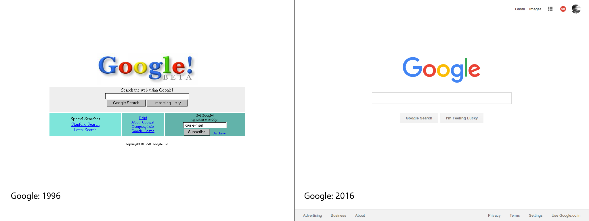

Material Design is the fairly new Design System introduced by Google for unification of Interface Design across their platforms. It just means that, from the date Material Design Transition is Complete, Google and Google Products will look and feel the same and unified across everywhere. You have seen Material Design at a lot of Places already, including Android Devices, Online Products by Google and used them.
Announced in 2014 with the introduction of Android Lollipop, Google has ever since been working on developing, redefining and simplifying properties of Material Design.
So, does Material Design Work?
This is one question I always wanted to answer. The particularly new Design Language from Google for use on its products have jumped out of their own spectrum and started appearing in many Online Projects - Websites, as well.
Material Design, a Design Language Google uses nowadays on their online as well as Mobile Products - especially Android - basically, is the kind of Design that tries to mimic paper in Software. You might not feel a connection of Mobile Phones to Paper directly, but they are trying to mimic the feel and properties of the so-called "Smart Paper" or "Quantum Paper" on Screens.
Google is a Successful Company because of their Design Language itself, I should say. Google - although it hadn't been uniform across products, had been using a very clear easy to understand and use Interaction Pattern which meant an Easier Interface for the daily user.The same can be seen in all their re-designs, though in every announcement they could use "Radical" as a keyword, it had always been the same thing wrapped in a new form, if you had the patience to observe it carefully.

There is virtually no difference except for the simplification that has happened over the years, and did I tell you - the homepage of the 2016 Google is almost Material Design Certified - its hidden though.
{kind=link}
Google is a company known for the technological innovations they've pioneered over the very little time period which happened since the company started in 1997 as a revolutionary Web Search Engine. It was never known for any achievements in Design itself, but unlike most other Companies, had the mindset to understand the need of it and include it as it went along.
Google had to redesign their system to keep it going. That is where Material Design came in, from the need of a unification of Interaction Patterns to make it look similar as well as feel similar so that it can be simplified into teaching the user only a very few amount of rules to live in the Google Ecosystem. And, I believe that is what exactly they could accomplish with Material Design itself.
Material is different, but not better in a lot of means. It set a lot of things right, but not everything - there are drawbacks - as there are in everything.
I, as a Developer and Designer(both beginner) am of the personal opinion that by limiting Android Applications to use only a specific set of UI elements by default, Google did restrict the Openness of Android, but that does make Android make simpler to the User.
Material Design is not that material too. Although I have read there is a lot of research done on applying the Material Design Principles as close as to reality as possible,
e.g: The Shadows used in the Design elements are tested on real life conditions and made to match Light as it falls on the elements from different points.
They are not so real though. The Design uses a lot of very Bright Colours and are not very pleasing to many users I know. It reminds me more of a crowded city population than the rural resident that I am. It can also be, me just stereotyping. I believe the iOS approach to Design is better than Material itself for different reasons, personally prefer the subtleness that iOS UI uses than Android and Google.
From UX(not UI) point of view, material is a huge improvement from what had been Google before. It surely does help the user get things done quicker. Still, it doesn't feel very Complete though. But we can hope for improvement since the Designers have already said Material will never remain a constant, always will improve and try to be perfect as time goes.
If I designed Material for Google(only a perspective) it would be following more of the patterns that are already there than implementing new patterns. I would've gone more into UI to make it look more realistic too, but that would end me up(I hope) in Android looking more like iOS, though.
It does work, only not in the way I want it to.